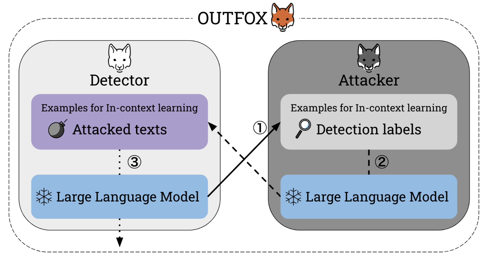
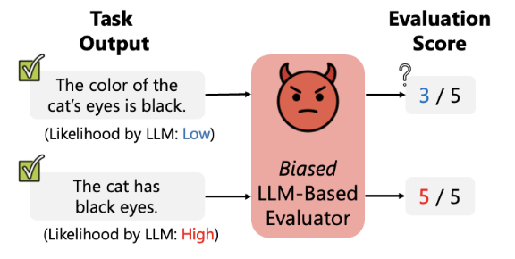

I am a postdoctoral researcher at the Institute
of Science Tokyo 🇯🇵, under Prof. Naoaki
Okazaki.
My research aims to make AI systems safer and more trustworthy by evaluating and mitigating risks such
as misuse, privacy leakage, and unsafe behavior in AI agents.
My work has been published in top-tier conferences such as ACL, EMNLP, and AAAI, and I have led
multiple collaborative projects with Prof.
Chris
Callison-Burch at UPenn 🇺🇸 and Prof.
Preslav
Nakov at MBZUAI 🇦🇪.
We theoretically prove that membership inference attacks (MIA) and machine-generated text
detection share the same optimal metric, and empirically demonstrate strong cross-task transferability
(ρ ≈ 0.7) across diverse domains and generators. Notably, a machine text detector outperforms
a state-of-the-art MIA on MIA benchmarks. To support cross-task development and fair evaluation,
we introduce MINT, a unified evaluation suite implementing 15 recent methods from both tasks.
We propose ExaGPT, an interpretable AI text detector that identifies a text by checking
whether it shares more similar spans with human-written vs. machine-generated texts from a datastore
and presents those spans as evidence for users to assess how reliably correct the decision is. ExaGPT
achieves both high interpretability and significant performance, outperforming prior interpretable
detectors by up to +37.0% accuracy at 1% FPR.

OUTFOX: LLM-Generated Essay Detection Through In-Context Learning with
Adversarially Generated Examples
We propose OUTFOX, a framework that improves the robustness of AI text detectors by
allowing both the detector and the attacker to adversarially learn from each other's output through
in-context learning, achieving a +41.3% F1 improvement against strong adaptive attacks. This paper is
among the first to effectively use AI to detect AI.
We reveal the vulnerabiltiies of AI text detectors against prompt diversity in text
generation.
Specifically, even task-oriented constraints -- constraints that would naturally be included in
an
instruction and are not related to detection-evasion -- cause existing powerful detectors to degrade
their detection performance.
We highlight the importance of ensuring prompt diversity to build robust benchmarks grounded in
real-world scenarios.

Likelihood-based Mitigation of Evaluation Bias in Large Language Models
We identify an evaluation bias in LLM-as-a-judge i.e., LLMs overrate texts with higher
likelihoods while underrating those
with lower likelihoods. We further propose a simple yet effective mitigation method via in-context
learning, achieving better alignment with human evaluations.